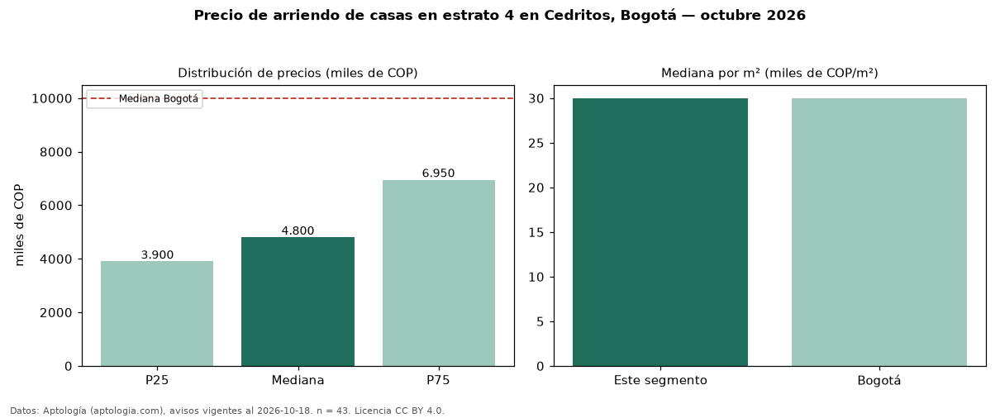

Precio de arriendo de casas en estrato 4 en Cedritos, Bogotá — octubre 2026
Con 43 avisos vigentes, el canon mediano de casas en estrato 4 en arriendo en Cedritos (localidad de Usaquén), Bogotá es COP 4,80 millones al mes. Eso es 78 % más que la mediana de toda la vivienda de estrato 4 de Cedritos (COP 2,70 millones, n = 414); este segmento reúne el 10 % de esos avisos. Por metro cuadrado, la mediana es COP 30.000/m² al mes (n = 43), 32 % por debajo del conjunto de referencia (COP 44.000/m²). El área mediana anunciada es 163 m². El segmento con más oferta es el de 3 o más habitaciones (41 avisos, mediana COP 4,80 millones). La administración mediana declarada es COP 580.000 al mes (n = 15), aparte del canon. La mitad central de los avisos va de COP 3,90 millones a COP 6,95 millones (razón 1,8), una dispersión moderada. La mediana de todas las casas en arriendo de Bogotá es COP 10 millones (−52 % de diferencia). Datos: Aptología (aptologia.com), CC BY 4.0 — https://www.aptologia.com/casas-en-arriendo/bogota/cedritos. Archivos: PDF, CSV con las cifras y gráfica PNG.

| Avisos únicos | 43 |
|---|---|
| Percentil 25 | COP 3.900.000 |
| Mediana | COP 4.800.000 |
| Percentil 75 | COP 6.950.000 |
| Mediana por m² | COP 30.000 |
Fuente: avisos vigentes de portales inmobiliarios recopilados por Aptología, deduplicados (mínimo 30 avisos únicos por celda). Precios pedidos, no cerrados. Fecha: 2026-10-18.